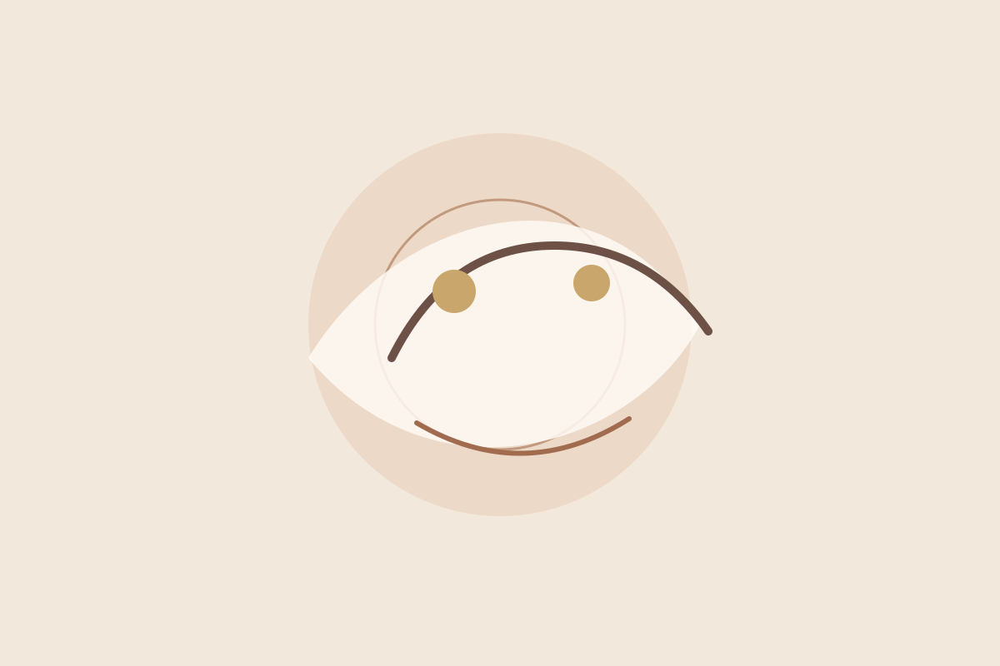
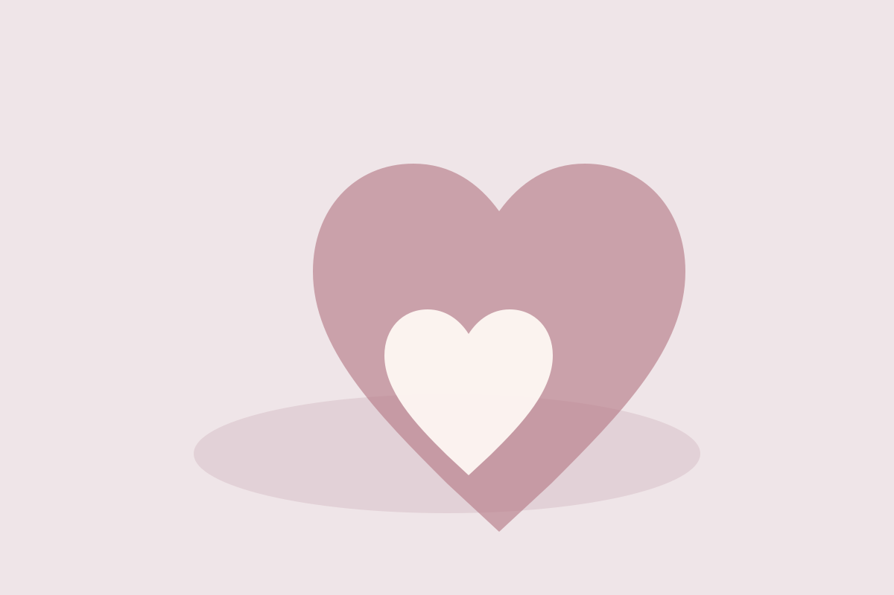

Wähle den Rahmen, der sich für dich stimmig anfühlt.
Alle Angebote schaffen auf unterschiedliche Weise Raum für Wahrnehmung, Entspannung und persönliche Entwicklung.
Craniosacrale Energie- & Körperarbeit
Eine ruhige, biodynamisch geprägte Form energetischer Körperarbeit. Die Anwendung erfolgt bekleidet auf einer Massageliege und beginnt mit einem kurzen Gespräch.
Johanna arbeitet nicht mit einem festen Ablauf, der etwas am Körper erzwingen soll. Im Vordergrund stehen Präsenz, sanfte Berührung und ein individueller, wertfreier Raum.
- ca. 60 Minuten
- 97 € pro Einzeltermin
- 5er-Karte: 455 €
- vor Ort in Salz


Berührung und ätherische Öle als bewusste Auszeit.
Bei der AromaTouch® Technique werden acht ausgewählte doTERRA-Öle sanft entlang der Wirbelsäule und an den Fußreflexzonen aufgetragen.
Auf der bisherigen SeelenFokus-Seite beschreibt Johanna die Anwendung als entspannend, stärkend und ausgleichend und besonders passend für Menschen, die sich erschöpft, überfordert oder innerlich unruhig fühlen.
Die verwendeten Öle
- Balance®
- Lavendel
- Teebaum
- On Guard®
- AromaTouch®
- Deep Blue®
- Wild Orange
- Pfefferminze
Ein Spiel, bei dem jede Person für sich spielt – und niemand allein ist.
Das „Spiel der Leichtigkeit“ ist eine spielerische Reise zur Selbstreflexion. Bis zu sechs Personen können teilnehmen. Johanna hält dabei den Raum, während jede Person ihre eigene Erfahrung macht.
So läuft es
Gespielt werden sechs Runden. Die Dauer hängt von der Gruppengröße und vom Verlauf ab. Deshalb solltest du mehrere Stunden Zeit mitbringen.
Du brauchst nichts mitzubringen – außer Offenheit und Freude daran, etwas Neues auszuprobieren.
Rahmen & Preis
22 € pro Person
Johanna kommt auf Wunsch auch zu euch nach Hause. Abhängig von der Entfernung können zusätzliche Fahrtkosten entstehen.
Spielfeld, Arbeitsblätter, Spielkarten, Spielfiguren und Würfel werden gestellt.
Du bist unsicher, was zu dir passt?
Dann ist das kostenlose Informationsgespräch der einfachste Einstieg. Schreib kurz, worum es bei dir geht, und ihr schaut gemeinsam nach einem passenden Rahmen.